Start here
Why a PC-fan filter box
Extensive testing has shown that the combination of MERV 13 furnace filters and PC fans can make one of the cheapest, quietest, highest-performance air cleaners you can build or buy.
{kind=link}
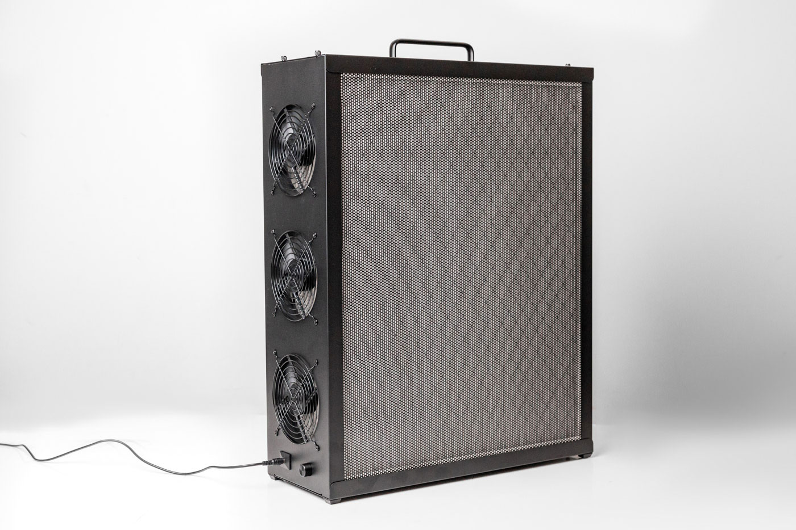
The idea
Standard furnace or HVAC filters are inexpensive, easy to find, and surprisingly effective. In countries where they are not standard, you can use whatever locally available filters offer the best value. Mount several of them in a box. Pull air through them all at once using a bank of computer fans. The result is a low-cost air cleaner that is extremely powerful yet very quiet. As the filter area is large, air passes easily through the media, eliminating the need for a large, powerful fan. This maintains a high capture rate and low noise level while ensuring a high total airflow.
Airflow beats peak rating: why MERV 13 can out-clean HEPA
How quickly a room is cleaned is its Clean Air Delivery Rate, or CADR. It is defined by
the AHAM AC-1
standard. CADR is the capture rate multiplied by the airflow. So airflow
matters just as much as the percentage the filter traps. True HEPA media captures 99.97% at 0.3 µm.
But it is dense, so it restricts airflow and the fan moves less air. A
MERV 13 filter lets far more air through for the same fan. In fact, denser, higher-rated filters do not
always raise CADR, because the lost airflow can cancel the gain.
So, while a HEPA filter may capture more particles in a single pass, a MERV 13 filter driven by the same power fans can make many more passes in the same amount of time and therefore often achieve a cleaner result.
{kind=link}
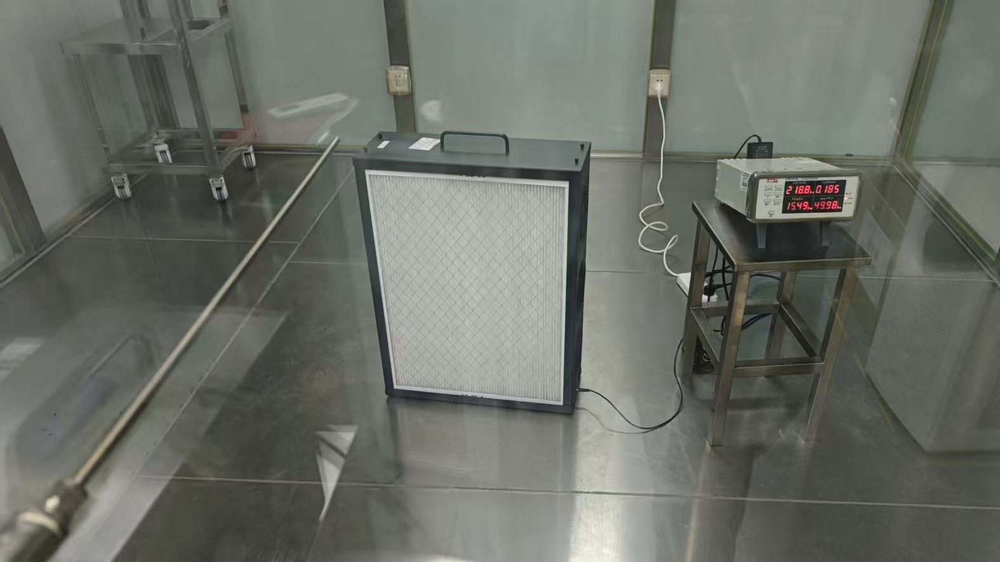
Why PC fans: quiet, controllable, and easy to maintain
The box has a large filter area, so each fan only has to overcome a little resistance. That is exactly where PC case fans excel. Good 120 or 140 mm PWM fans move 45 to 70 CFM at roughly 12 to 25 dBA. That is far quieter than a box fan at full speed, so more tolerable and less likely to be turned off or down by those sensitive to noise. 140 mm fans deliver a given airflow at a lower speed, so they are even quieter. Other advantages:
- Speed control: a 4-pin PWM fan lets you trade noise for airflow, or run it quietly overnight.
- Safe, low voltage: 12 V DC fans are simple to wire and stay cool.
- Cheap and repairable: fans are standardized and easy to swap. The filters are common furnace filters you replace on a schedule.
- Redundancy: if one fan fails, the rest keep running until you can replace it.
Replace the filters approximately every 6 to 12 months during standard use. Very heavy smoke, like from wildfires, can clog a MERV 13 within weeks. A clogged filter restricts airflow and lowers CADR, so timely changes keep the box performing.
Free & open
Why this builder is free
Nukit designs and sells air purifiers and Far-UVC. But clean air should not depend on income. That is why we provide this open source builder for free.
Free, open, and yours to make
The FilterBoxBuilder lets anyone, or any group with access to a laser cutter or 3D printer make several different types of DIY air cleaners to suit nearly every situation. You use cheap, common parts. No account, purchase, or sign-up is required. We believe clean indoor air is a public good. The more people who can make a good purifier from local materials, the better. There is no catch: the builder produces complete, ready-to-make files for free.
If the builder saves you money or helps you breathe easier, you can support our work. Tell others about our products, or buy our kit below.
When a finished kit makes more sense: the Nukit Tempest Pro
A homemade box is great if you enjoy making things and have the tools. But maybe you would rather not source parts, cut, print, and adjust the fit. Or you simply want something that lasts for decades. Then consider our flagship product, the Nukit Tempest Pro. It uses the same PC-fan, MERV 13 principle, engineered into a finished, all-metal unit.
{kind=link}
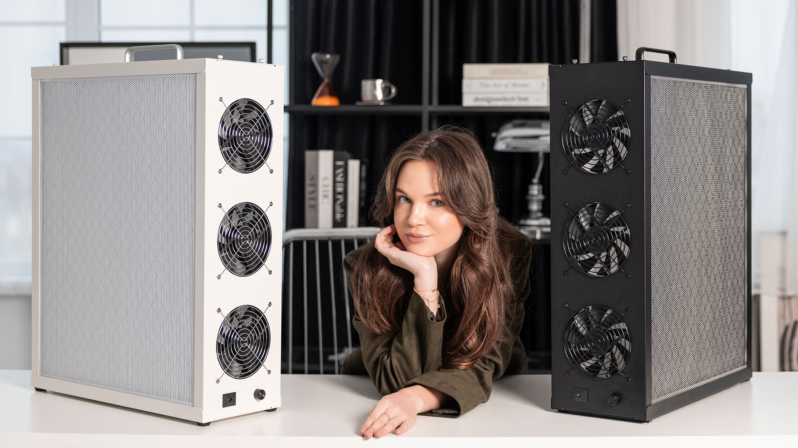
$385.95 USD · ships free · tax and tariffs included · black or white.
Here is what you get over a DIY box:
- All-metal, buy-it-for-life construction. It will not warp, sag, yellow, or off-gas over years of use, the way wood or plastic eventually can.
- Everything included: custom high-pressure 140 mm fans, fan and filter grills, a 12 V power supply with a 5 m cable, a PWM speed controller, wiring, and cable management. You simply add two standard 20×25×1 MERV 13 filters.
- Independently lab-measured performance: 222 CFM CADR at a whisper quiet 39 dBA on full power. That is one of the best noise-to-airflow ratios available, and it can easily be equipped with more powerful (so louder) fans for higher CADR if you want it.
- No fit-and-tune step. It assembles like a PC case with a screwdriver and has no sharp edges. There are no kerf tests, print fitting, or parts hunting.
- Low profile and easy to mount. It looks like a tower PC. It includes a wall and ceiling mount, anchors, and VESA holes, and the filters still swap in place.
- Repairable and standard: no app, no cloud, and no "smart" parts. Nearly every component is an ordinary PC part, and you can paint it any color.
- Off-grid friendly: it runs on 12 V DC with very low power draw. So it works well on solar or a battery.
The USA store is shown here. Canada and other countries have their own pages on the same store.
Overview
How the builder works
FilterBoxBuilder turns a few measurements into a complete high performance air-cleaner. It is built around standard furnace filters and off-the-shelf PC fans.
{kind=link}
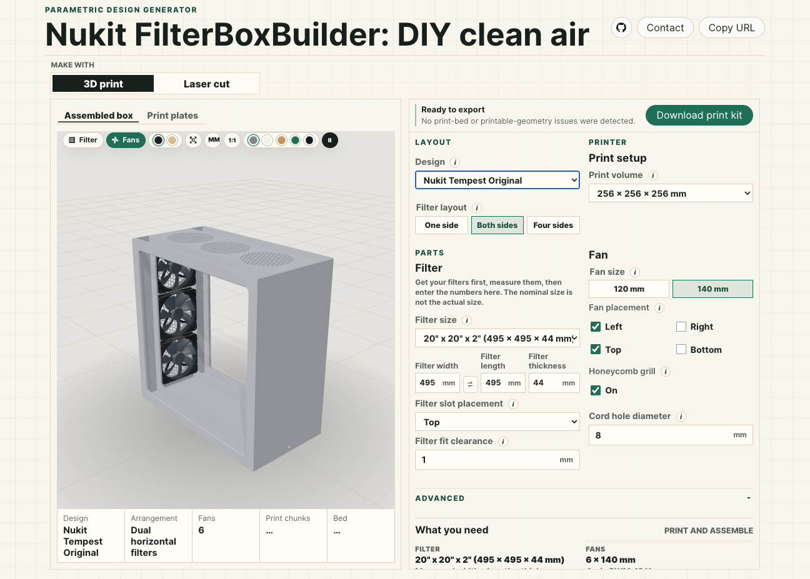
Choose a method at the top: 3D print or Laser cut. Then set your filter size, fan size, and fan placement. The 3D view updates as you work. The export button produces the files for your method: a 3MF print kit, or an SVG cut sheet.
You set the numbers, and the box is generated to match. So any filter and fan combination produces a box you can build. The sections below explain each control. Most are in the main panel, and a few are under the Advanced accordion that opens when you click it.
Layout & design
Layout & design
Choose the overall design and size of the box. Higher CADR is always better, but it requires more filter surface area, and so a larger box.
{kind=link}
{kind=link}
{kind=link}
Filter layout
One side places a single filter on one face of the box, ideal for wall or ceiling mounting. Both sides puts a filter on two faces, for roughly twice the filter area and airflow in the same footprint. If you leave one side without fans or filters, you can put it against the wall to safe space. 3D Print also offers Four sides: a tower with a filter on each wall and fans on top. This design should have at least 150mm clearance from walls and furniture on all sides.
More filter area slows the air through the media. That raises the capture rate and lowers noise (see Why a PC-fan filter box).
Back fans (one-side box)
After choosing a one-side box for your filter layout, if you select Back for the fan placement with no wall fans, you can create a panel-style air purifier. This is a slim box that takes air in through the front filter panel and pushes it out through the array of fans on the back plate.
{kind=link}
{kind=link}
This design is the most portable and offers the most CADR for size, but may be a little louder than other designs due to its single filter and large number of fans. An open backed portable folding music stand is an ideal way to mount and use this style.
Box depth
On the one-side back-fan panel, Box depth sets how deep the box is. It is the gap between
the filter and the back plate, used instead of the fan-diameter chamber. The default is 70 mm.
A shallow box is more compact. A deeper box gives the air a larger plenum, which can even out the flow and
prevent uneven filter loading. This setting only applies when Back fans are on and no wall
fans are selected.
Filter
Filter
The box is sized to your actual filter, so measure it rather than trusting the nominal size.
{kind=link}
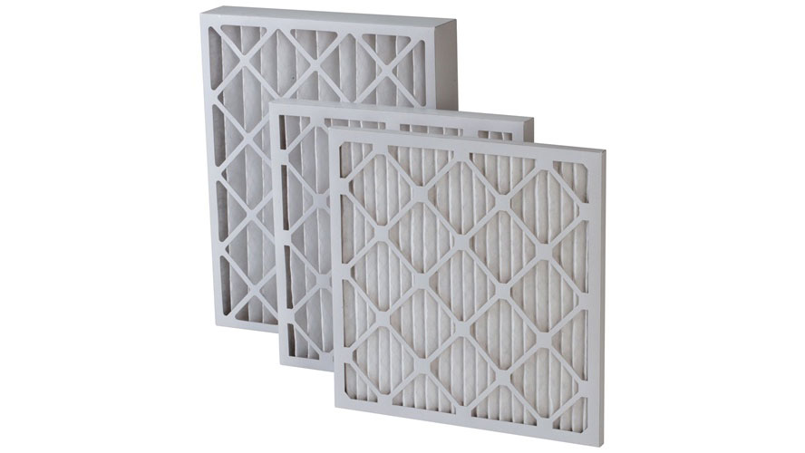
Filter size (width, length, thickness)
Choose a stock size from the menu, or enter your own. Filters are sold by a rounded nominal size, such as 20"×20"×1". But the actual size can be very different depending on the brand. So measure your filter, and enter the true width, length, and thickness in millimetres so the housing fits. Thicker filters with deeper pleats hold more media, so they capture more and clog more slowly. A 2" (about 50 mm) MERV 13 outperforms and outlasts a 1" filter at the same airflow. Use the swap button to exchange width and length, changing the box from portrait to landscape.
Fans
Fans
Standard PC case fans: quiet, inexpensive, easy to control, and easy to replace.
{kind=link}
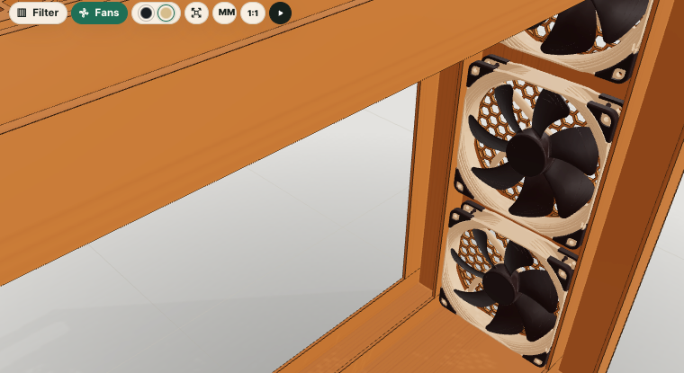
Fan size
This is the diameter of the PC fans you will use, commonly 120 or 140 mm. It sets each fan opening and screw pattern, and sizes the housing around them. 140 mm fans move the same air at a lower speed, so they tend to be quieter. 120 mm fans are easier to source and pack more densely. Match this to fans you can actually buy.
Box/Exhaust
On the four-side filter tower, Box/Exhaust (under Advanced) swaps the top panel's grid of PC-fan openings for a single central fan hole ringed with mounting screw holes. This is the classic single-fan "filter cube" arrangement: instead of many case fans, you fit one larger box or exhaust fan over the opening.
{kind=link}
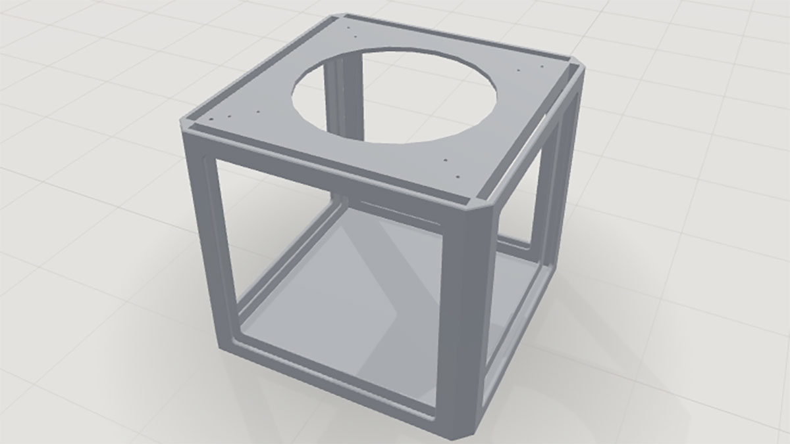
The fan hole diameter and up to two rings of screw holes are adjustable, so you can match a specific fan, blower, or duct flange.
{kind=link}
{kind=link}
{kind=link}
{kind=link}
When using a box fan, the fan hole diameter should be the same as the fan blade to form a shroud. Leave the fan hole diameter at 0 to let the builder automatically pick a sensible default from the filter width.
{kind=link}
{kind=link}
{kind=link}
Place two holes in each corner using the first and second Ring settings, then pull nylon zip ties through the fan grill to secure a box fan to the top of the filter cube.
Cord pass-through
Cord pass-through
An optional bore for a DC power jack or power cable.
Cord hole diameter
This is the diameter of the DC power-jack body, cord grommet, or power-cord pass-through. Set it to fit
whichever you decide to use. Set it to 0 for no hole at all. The builder keeps the bore clear
of the fan openings. If it would land under a fan, the fan bank re-packs to make room, rather than moving
the cord.
{kind=link}
{kind=link}
{kind=link}
Cord corner offset
This is the distance from the corner to the cord hole. It is used when the cord is positioned toward one end of the wall and you want to give it a little extra space.
Printing
Printing (3D print)
Settings for fabricating the box on a 3D printer.
Print volume
This is your 3D printer's usable bed size. Check the manufacturer's website to be sure. Pick the volume that matches your machine. Any part that is too big for the bed is automatically split into chunks that fit, so a large box still prints on a small printer. The chunks glue together using short lengths of 3D printer filament as alignment pins.
{kind=link}
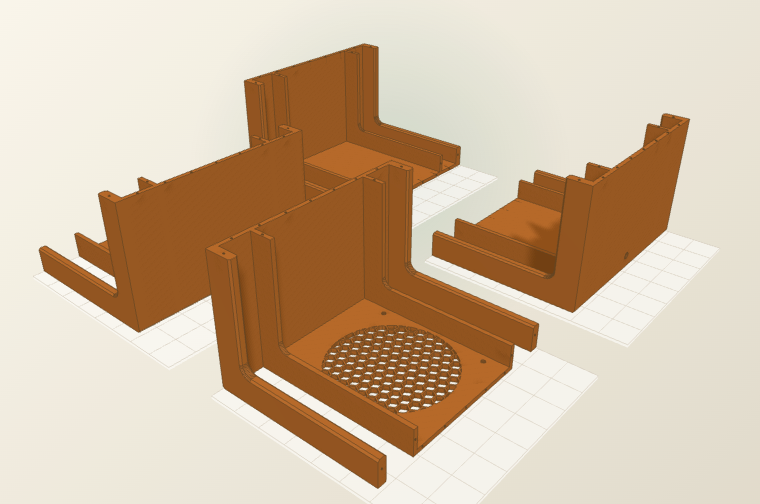
Laser cutting
Drawing & output
{kind=link}
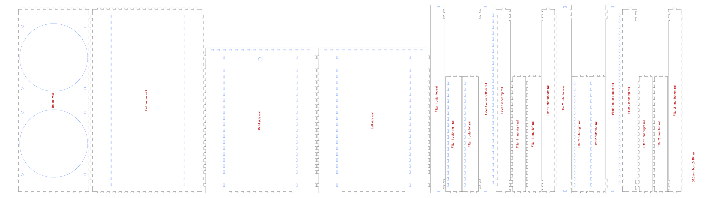
Engrave part labels
This etches each part's name lightly onto the cut sheet, so you can tell the pieces apart while assembling. Turn it off for a clean cut. Engraving adds laser time, so place labels on the inside face if you want them hidden.
Reference scale
This draws a ruler of a known length on the sheet. You can then confirm your cut came out at 1:1 before committing material. After importing the SVG or DXF, measure the line. If it is off, fix your document units or printer scaling.
Build it
Fabrication, gluing & assembly
You can make the same box two ways. Pick the workflow that fits your tools, then follow its tips.
A. Laser-cut plywood (or acrylic)
Cutting
- Use flat, void-free plywood or cast acrylic. 3 mm is ideal, because thinner stock may warp and fight the joints. There are purpose-made materials (laserply, MDF) made specifically for laser cutting that should be used whenever possible.
- Measure the thickness with calipers and set the material thickness to the real value.
- Cut one test finger joint first. Tune the kerf / fit allowance until it taps together snugly without forcing.
- Keep Engrave labels on for your first build. Sand off any scorch with a light pass of fine sandpaper.
Dry-fit, then glue
- Assemble the whole box without glue first, to confirm every joint and the filter slot work.
- Glue plywood with wood PVA (such as Titebond), or acrylic with acrylic cement. Apply a thin bead inside the slots, not on the faces.
- Square the box against a flat surface, and clamp or tape it lightly. Wipe off any squeeze-out before it cures.
- If there is room, you can seal small gaps around the filter with self-adhesive foam weatherstrip. Then all the air passes through the media, not around it.
- If you choose to paint or seal the box, use low- or no-VOC products and allow substantial curing time.
{kind=link}
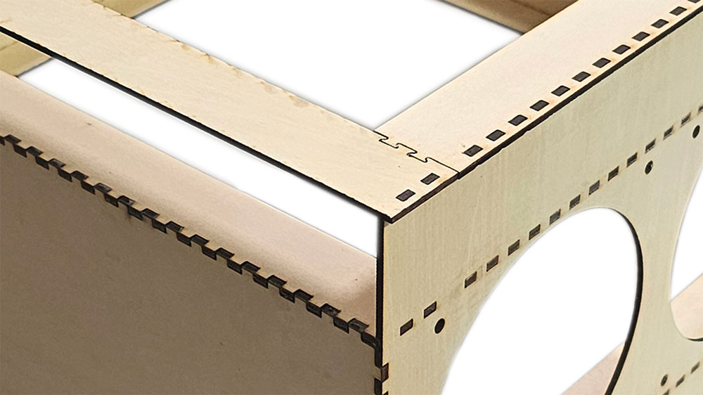
B. 3D-printed with alignment pins
Printing
- Print in PLA or PETG. PETG tolerates heat and sunlight better for a unit left running, and tends to last longer.
- Walls of 2 to 3 mm (3 to 4 perimeters) are plenty, at the maximum layer height for your nozzle diameter. 10% infill is fine, since the box carries little load.
- Large parts are split into bed-sized chunks.
- The exporter auto-orients chunks to minimize supports. If you print hexagonal fan grills vertically, cleaning out the supports will be difficult.
Alignment pins & gluing
- Split faces meet on printed alignment pins and matching holes. Dry-fit them with pins inserted to confirm the chunks seat flush before gluing.
- If the alignment pin holes are too tight, you can clean them out with a hand-held 1.8 mm drill bit, or slightly increase the hole size in the Advanced section.
- Glue chunk seams with cyanoacrylate (super glue) for PLA and PETG. The pins hold registration while the glue sets.
- Test-fit the filter and fans before final gluing.
- Hint: Glue two pieces at a time, wait for that to cure, then glue those assemblies two at a time. Three or more seams in a row can be difficult to clamp without the whole thing buckling.
{kind=link}
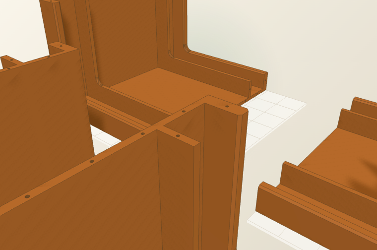
Mounting the fans
- Position fans to pull air through the filter and exhaust out the fan openings. Check the arrow on the fan hub or hold a small piece of tissue paper in front of the fan to see which way it it blowing
- Use the four fan-screw holes per fan. Self-tapping fan screws bite directly into the plastic body of the fan. Alternatively, you can use bolts, or pull-through rubber fasteners.
- Wire PWM fans to a 12 V supply or hub sized for the total current. Route the cable through the cord pass-through.
- Add grills to any exposed fan if you did not include the optional honeycomb feature.
License
License: free to use, share, and adapt
The FilterBoxBuilder and everything it produces are released under a Creative Commons Attribution-ShareAlike 4.0 International license (CC BY-SA 4.0).

What the license covers
This applies to the builder itself, the documentation on this page, and the output you generate with it: the cut sheets, DXF and SVG files, 3D models, and the boxes you make from them. You are free to use all of it, including for commercial purposes, with no account, fee, or permission needed.
What you can do
You can build boxes for yourself or for others, sell what you make, share the files, and remix or adapt the designs into something new. We encourage it. The whole point is to put clean air within reach of as many people as possible.
The two conditions
Attribution. Give credit to Nukit, link back to this builder, and note if you changed anything. A simple line such as "Based on the Nukit FilterBoxBuilder, licensed CC BY-SA 4.0" is enough.
ShareAlike. If you remix or build on the designs and share the result, release your version under the same CC BY-SA 4.0 license so others keep the same freedoms.
This is a plain-language summary, not the license itself. The full legal text is at creativecommons.org/licenses/by-sa/4.0/legalcode.